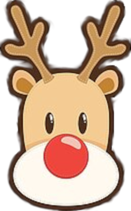

Virgin Mojito är annars en alkoholfri
drink eller cocktail med
lime, mynta och sockerlag samt is
Gårdagens chokela' var
Virgin Mojito är annars en alkoholfri
drink eller cocktail med
lime, mynta och sockerlag samt is
Fast den är förstås ännu godare med
tihi
Det var nog allt från julkalendern
för denna gång
Rudolf önskar god jul
och god fortsättning
